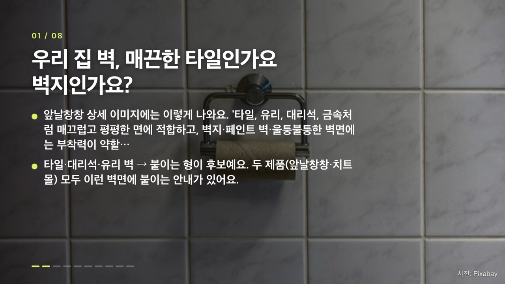
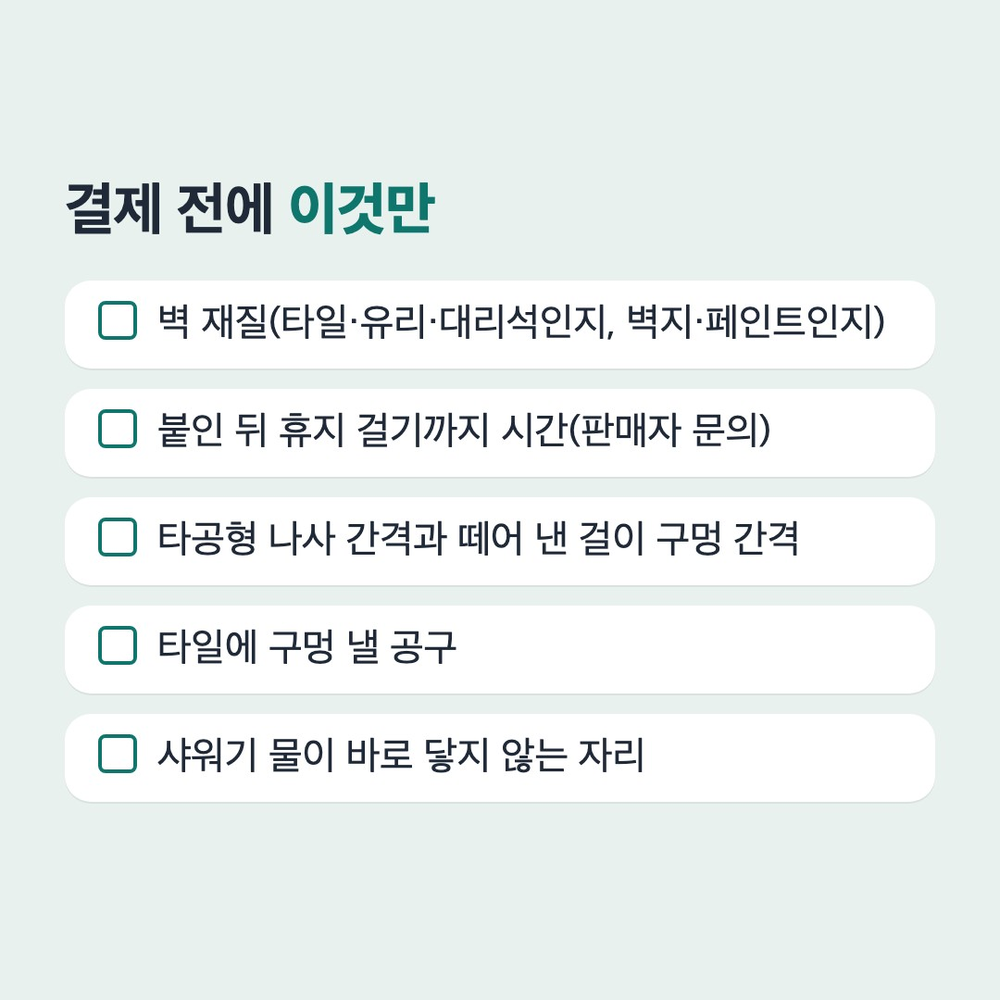

이 게시물은 쿠팡 파트너스 활동의 일환으로, 이에 따른 일정액의 수수료를 제공받습니다.
휴지 갈 때마다 덜렁이는 걸이, 구멍 없이 5,900원
새 휴지를 끼울 때마다 걸이가 덜렁이고, 전셋집이라 구멍을 새로 뚫기 망설여지는 집이라면 보세요.
아래 내용은 판매 페이지·상세 이미지 표기 기준이에요.
벽에 붙이는 스테인리스 걸이가 5,900원(상품평 776개), 휴대폰 올릴 선반까지 달린 건 6,300원(상품평 4,758개)이에요.

붙이는 형은 벽이 먼저예요.
벽지나 페인트 벽이라면 붙일 수 있는지부터 봐야 해요.

우리 집 벽, 매끈한 타일인가요 벽지인가요?
타일·유리·대리석 벽이면 붙이는 형이 후보예요.
앞날창창 상세에는 '타일, 유리, 대리석, 금속처럼 매끄럽고 평평한 면에 적합하고, 벽지·페인트 벽·울퉁불퉁한 벽면에는 부착력이 약할 수 있다'고 나와요.
치트몰도 이런 벽면에 붙이는 안내가 있어요.
다만 벽지·페인트 벽에 붙여도 되는지는 따로 확인해야 해요.
주문 전에 벽을 손바닥으로 한 번 쓸어 보세요.
매끈하고 평평한지가 붙이는 형의 첫 조건이에요.
구멍을 낼 수 있다면 타공형이 후보예요.
그 벽 재질에 박아도 되는지는 판매자 확인이 필요해요.
붙인 뒤 휴지는 언제부터 걸어도 되나요?
몇 시간인지는 숫자가 없어요.
앞날창창 상세엔 '시간이 흐른 뒤 사용'이라고만 나오니, 붙이자마자 새 휴지부터 걸지는 마세요.
부착 순서는 벽면 닦기 → 보호필름 떼기 → 붙이기 → '시간이 흐른 뒤 사용'이에요.
같은 상세에 '습기와 물기가 많은 환경에서는 접착력이 떨어질 수 있으니 주기적으로 고정 상태를 확인하라'는 문구도 있어요.
샤워기 물이 바로 닿는 자리는 피하는 게 좋아요.

떼어 낸 걸이 구멍, 다시 쓸 수 있나요?
지금 확인한 자료로는 답이 안 나와요.
원래 구멍을 다시 쓰려면 구멍 간격이 맞아야 하는데, 타공형 상세에서 나사 간격을 찾지 못했거든요.
타공형(7,040원)은 앵커와 나사로 고정하는 방식이에요.
순서는 구멍 뚫기 → 해머로 앵커 박기 → 베이스를 나사로 고정 → 걸이 끼우기, 4단계예요.
타일에 구멍을 낼 때 필요한 공구도 판매자에게 확인할 부분이에요.
구멍을 내기 싫다면 타공형은 빼세요.
잘못 사면 그대로 서랍행이에요.
휴지 위에 휴대폰까지 올려 둘 건가요?
올려 둘 생각이면 치트몰이에요.
받침대 18cm에 휴대폰·물티슈를 둘 수 있는 판이 있어요.
대신 재질은 스테인리스가 아니라 '두꺼운 ABS', 플라스틱이에요.
상세에는 '녹슬지 않음'이라고 나와요.
판이 필요 없고 금속 걸이를 원하면 앞날창창(스테인리스, 16×8cm)이에요.
가로·세로 둘 다 붙일 수 있다고 해요.
구멍을 내기로 했다면 타공형(9.1×5.5×16cm)도 스테인리스예요.
세 제품 모두 견디는 무게 수치는 없어요.
치트몰 상세 사진에 올라간 것도 휴대폰·물티슈 정도라, 무거운 물건은 다시 생각해 보세요.
주문 전엔 판매자 답부터 받아 두면 좋아요.
붙이는 형은 몇 시간 뒤부터 걸 수 있는지, 타공형은 나사 간격이 몇 cm인지예요.
그 답을 떼어 낸 걸이의 구멍 간격과 대 보면 돼요.

여기 적은 가격과 상품평 수는 11월 6일 19시 쿠팡 표시값이라, 링크를 여는 날엔 다를 수 있어요. 크기·재질·설치 순서는 판매 페이지와 상세 이미지 글자를 옮긴 것이고, 직접 써 본 후기는 아니에요.
앞날창창 스테인리스 휴지 걸이대 — 가격·구매처 보기
치트몰 무타공 핸드폰 거치대 휴지걸이 — 가격·구매처 보기
스테인리스 휴지 걸이대 타공형 — 가격·구매처 보기
#화장실휴지걸이 #휴지걸이교체 #무타공휴지걸이 #휴지걸이 #욕실용품